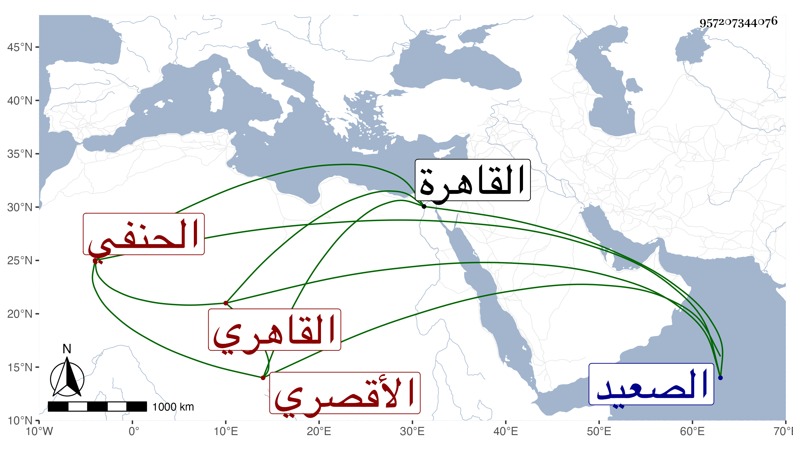

0902Sakhawi.DawLamic.ITO20230111-ara1.EIS1600.957207344076
Biography ID: 957207344076
140
محمد بن عبد اللطيف بن أحمد الشمس بن التقي الأقصري بالضم ثم القاهري الحنفي والد البدر أبي الفضل محمد الآتي ويعرف بالمحلى لكون جده كان يتردد إليها للتجارة في البطائن ونحوها . ولد بالأقصر من الصعيد وتحول منها وهو صغير إلى القاهرة فحفظ القرآن واشتغل شافعيا وأخذ عن الشمس البوصيري وتزوج سبطة له هي ابنة للشهاب الحسيني وسمع على الشهاب الكلوتاتي وغيره ثم أنه أقرأ المماليك في الطباق وتحول حينئذ حنفيا وحفظ القدوري وغيره واشتغل في الفرائض والحساب والميقات وغيرها على ابن المجدي وكذا أخذ الفرائض والميقات مع العربية وغيرها عن الشهاب الخواص والميقات فقط عن النور النقاش والفرائض فقط عن أبي الجود والعربية عن الشمس بن الجندي ولازمه وكذا ابن الهمام والشمني وابن عبيد الله والأمين الأقصرائي في الفقه وغيره واشتدت عنايته بملازمة الأمين جدا وحمل عنه من الفنون شيئا كثيرا وقرأ عليه الترغيب للمنذري وانتهى في رمضان سنة خمس وأربعين ، وكذا سمع على شيخنا والزين الزركشي وعائشة الحنبلية والشمس البالسي والقطب القلقشندي والجلال بن الملقن وأم هاني الهورينية في آخرين ، وتلقن الذكر من الشيخ مدين وغيره وحج مرارا وأخذ في سنة ثلاث وخمسين منها عن أبي البقاء ابن الضياء وأكثر من التردد للمذكورين من شيوخ الدراية وغيرهم وبرع في الميقات والفرائض والحساب والعربية وشارك في غيرها واختصر سيرة ابن سيد الناس وحياة الحيوان وكتب على الكنز حاشية في جزء مات عنه مسودة وأوراقا في الصبر وسكن الشرابشية بالقرب من جامع الأقمر وكان باسمه مشيختها وأقرأ الطلبة يسيرا ، وممن أخذ عنه الميقات المظفر الأمشاطي وعبد العزيز الميقاتي وكذا أخذ عنه ناصر الدين الأخميمي وكان صديق والده وهو الذي حنفه ، وكان خيرا ساكنا متواضعا منجمعا عن الناس مقتصدا على طريق السلف . مات عن بضع وستين في المحرم سنة اثنتين وسبعين ودفن عند ضريح الجعبري بباب النصر وكان له مشهد حافل رحمه الله وإيانا .
